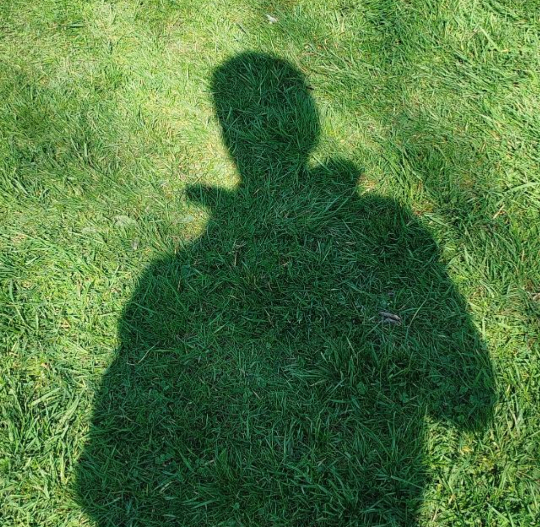

OpenStadtBank
An open-source banking app for a children's holiday program. A Django rewrite focused on clean architecture, useful documentation, and making a complex idea approachable.
Explore projectBased in Germany
I'm Ömer — a student developer drawn to the space where reliable backend systems meet curious hardware experiments.

CURIOUSLearning how to make computers do stuff.
01
I like taking a problem apart, understanding how it works, and putting it back together a little better.
My main interests are backend development, Python, Django, and infotronics — the meeting point between information technology and electronics. I learn by building, breaking, and trying again.
02
An open-source banking app for a children's holiday program. A Django rewrite focused on clean architecture, useful documentation, and making a complex idea approachable.
Explore projectA first practical experiment in building a bank system with a web interface, database, and the fundamentals of Django.
View on GitHubA small weather station built during an internship week to learn PCB design, sensor integration, and controller programming.
Private project03
A student, not a finished product.
Right now I am learning more about backend development, Python, Django, and the practical side of electronics. This is a snapshot of what I am curious about—not a list of credentials.